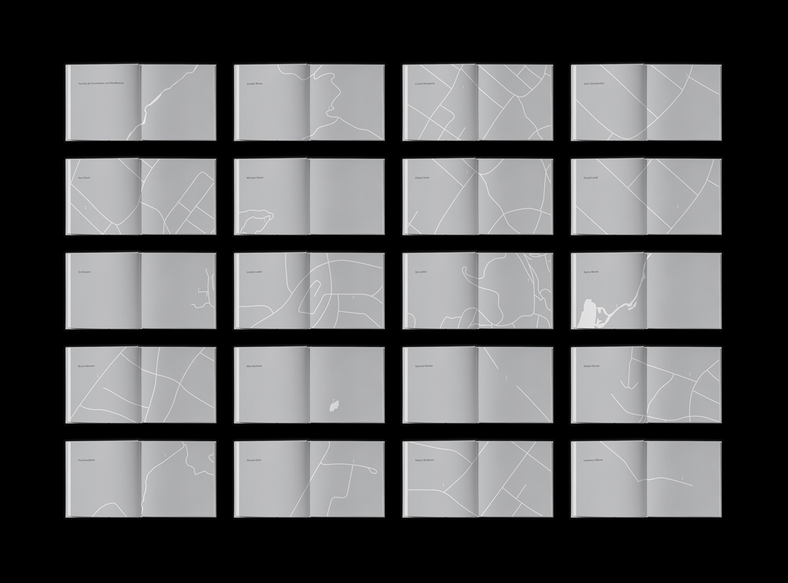
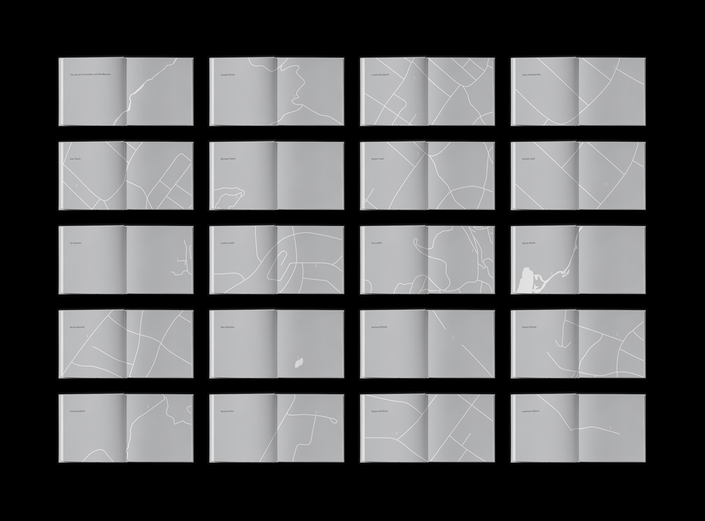
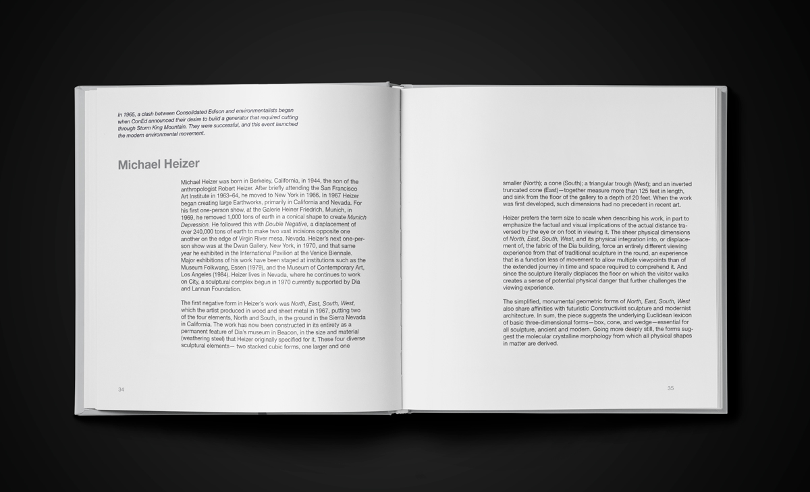
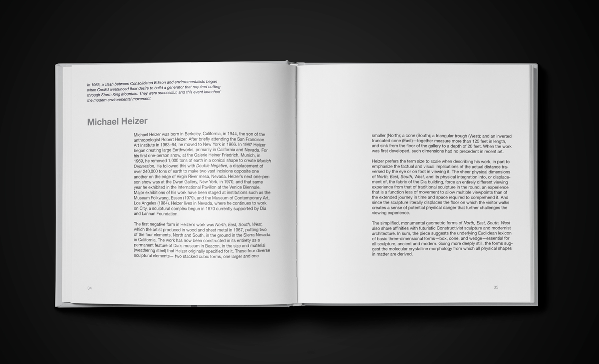
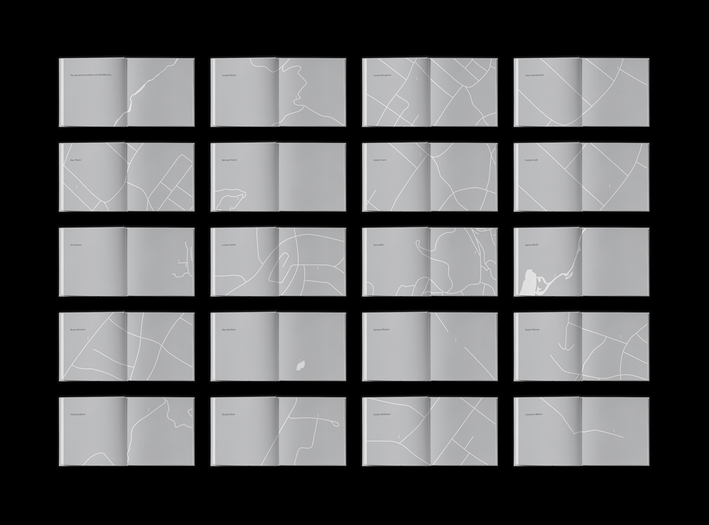
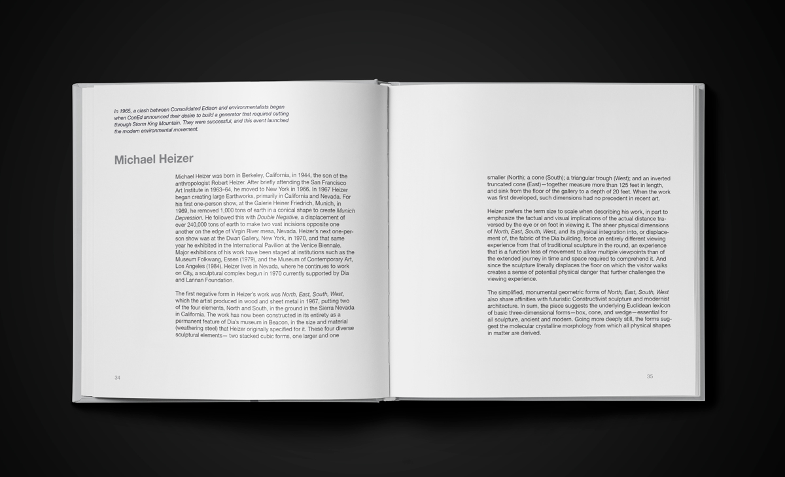

 

Dia:Beacon is a visitor’s guide for the contemporary art museum barring the same name. The guide provides information about the displayed artists while educating visitors about the surrounding area of Beacon, NY. All 19 artists are connected to a landmark of the Beacon area. For example, the disciplined work of Sol Lewitt connects to the nearby West Point military academy.

